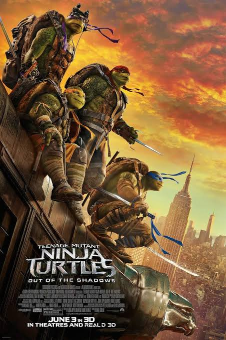

Welcome to the Teenage Mutants Ninja Turtles Fan Page, Comics, and Trailer.

Teenage Mutant Ninja Turtles (TMNT) are four fictional mutant turtle brothers trained in ninjutsu by their rat sensei, Master Splinter. They live in the New York City sewers, love eating pizza, and fight against villains like Shredder. Teenage Mutant Ninja Turtles Out of the Shadows was released in theaters in the United States on June 3, 2016.
The sequel to the 2014 Teenage Mutant Ninja Turtles film, it was directed by Dave Green, and written by Josh Appelbaum and André Nemec. The film stars Megan Fox, Will Arnett, Laura Linney, Stephen Amell, Noel Fisher, Jeremy Howard, Pete Ploszek, Alan Ritchson, Tyler Perry, Brad Garrett, Gary Anthony Williams, Brian Tee and Sheamus. The film follows the Turtles as they attempt to stop a conspiracy plot by Shredder and Baxter Stockman to unleash an alien warlord named Krang.